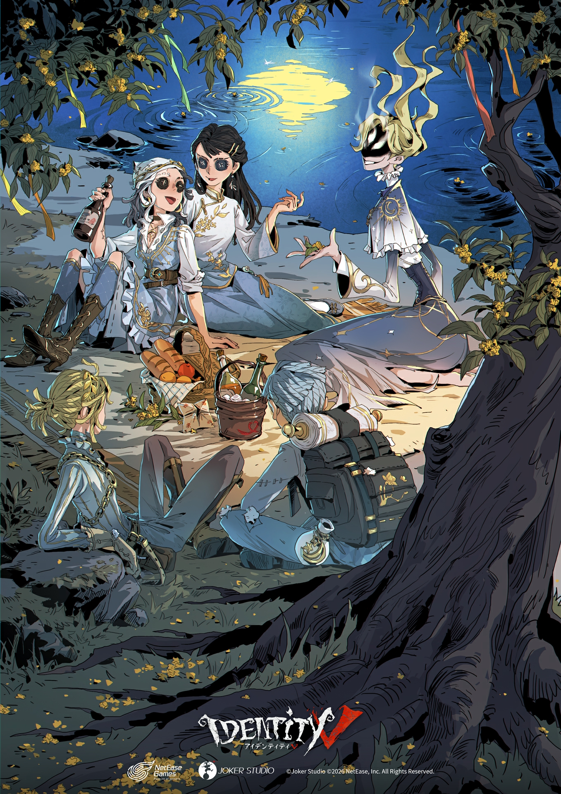
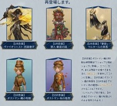
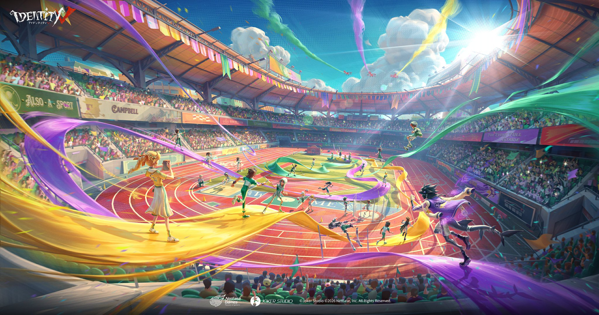
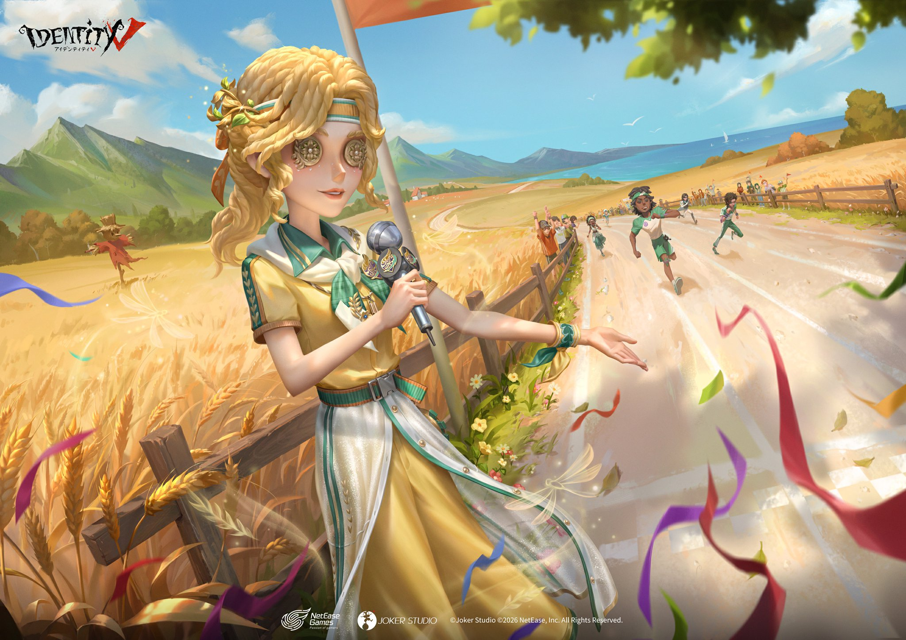
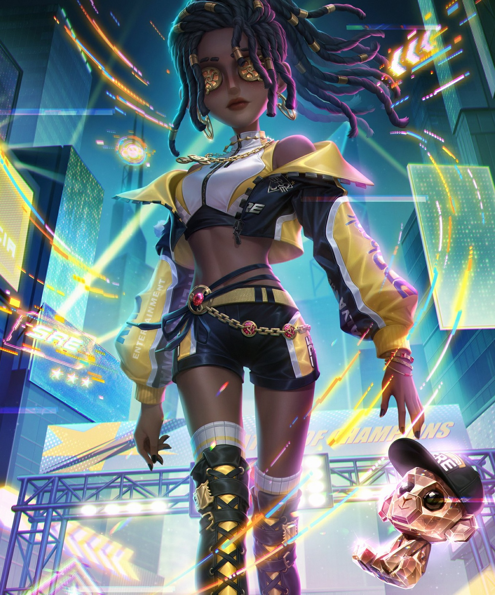
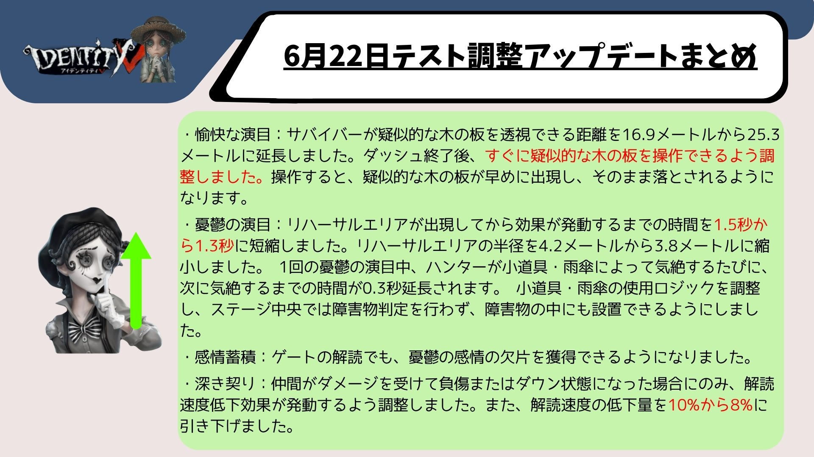

2026.9.24現在

中秋節バージョンイベント「桂下の祈り」開催！
中秋の月夜に伝統ゲーム「博餅」を楽しもう！ログイン・ストーリー・博餅・対戦に参加して【木犀の便箋】を集め、時空の影【SSR携帯品】-月盞、【SSR家具】-木犀の風鈴、骨董商【SR衣装】-月枝などの豪華ボーナスと交換できます！
博餅は4人で楽しむサイコロゲーム！「状元」になると【状元帽】を獲得でき、公共マップで着用できます。
イベント期間：2026年9月24日メンテナンス後〜2026年10月7日23時59分
詳細はこちら
eスポーツシリーズ・スポーツテーマ衣装が期間限定再登場！
OPH・BLK・SREシリーズのSSR衣装がエコーで購入可能！スポーツテーマSR衣装が40%オフで登場！【UR衣装】バッツマン-チャンピオン舵手などはエコーまたは欠片でも購入できます。
再登場期間：2026年9月24日メンテナンス後〜2026年10月7日23時59分
へむへむの一言
大人気eスポーツシリーズが再登場！まじ全衣装かっこいい

秋シリーズUR衣装が期間限定再登場！
【UR衣装】ヴァイオリニスト-民謡歌手・野人-童話の国・「使徒」-ウルタールの来客が各2888エコーまたは12888欠片で再登場！対応【SSR携帯品】も各1068エコーまたは3888欠片で購入可能！
再登場期間：2026年9月24日メンテナンス後〜2026年10月21日23時59分
へむへむの一言
秋シリーズ衣装が欠片でも買えるチャンス！忘れぬうちに購入しておこう。
2026.9.17現在

バージョンイベント「光と夢を追って」開催！
オレトゥス運動会が開幕！ログイン・選手育成・運動会場プレイに参加して、SSR家具-この一瞬を永遠に、全キャラ従者-シャオシャオ、テーマシリーズSSR衣装（記者・幸運児・魔トカゲから1択）などの豪華ボーナスを獲得しよう！
イベントSR衣装はカスタム染色対応！自分だけのオリジナルカラーにカスタマイズできます。
イベント期間：2026年9月17日メンテナンス後〜2026年10月7日23時59分
詳細はこちら
へむへむの一言
それぞれの衣装が体育祭みたいでかわいい！2VS8とかで10人全員同じ衣装とかで遊びたいなぁ

運動会テーマSSR衣装・SR衣装がショップに登場！
【SSR衣装】記者-初穂・幸運児-緑陰・魔トカゲ-紫電が各1388エコー（初週15%オフ・1178エコー）で登場！
医師・庭師・傭兵・空軍・機械技師など全24種のSR衣装も60エコーまたは1088欠片で購入可能！
販売期間：2026年9月17日メンテナンス後〜2026年10月14日23時59分

eスポーツシリーズ新衣装・占い師新衣装がショップに登場！
Born to Dominate! We are Team
SRE！【SSR衣装】呪術師-SRE.PATRICIAと【UR携帯品】呪術師-星鳴りの反響のパックが20%オフの2618エコーで購入可能！
【SSR衣装】占い師-カンハネズも1388エコーまたは4888欠片・63800金リンゴで購入可能！
販売期間：2026年9月17日メンテナンス後〜2026年10月14日23時59分
へむへむの一言
呪術師の中で過去最高といっていいほどカッコイイ衣装が登場！見逃せない
2026.9.4現在

キャラ・天賦・マップ調整が実施！
【サバイバー調整】マイムアーティストの疑似木の板透視距離が16.9mから25.3mに延長！憂鬱の演目や感情蓄積なども調整されました。作曲家・小説家も調整あり。
【ハンター調整】「心の獣」が再度下方修正。追襲クールタイムが16秒に延長、追跡探知範囲が30mから25mに縮小など複数の調整が実施されました。復讐者は新外在特質「怨念熾盛」が追加され強化！夢の魔女の原生信者も強化されました。
【天賦調整】「傷弓之鳥」の発動範囲が20mから16mに縮小、「愛着効果」の自動回復速度が低下しました。
【マップ調整】月の河公園のスプリングボックスに使用後45秒間の再使用制限が追加されました。
キャラ・天賦バランス調整の詳細はこちら
へむへむの一言
マイムアーティスト少し人気なかったけど、遠方から補助傘投げれるの強すぎる！新環境入り確定
みんなのコメント